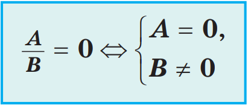

Решение многих задач приводит к уравнениям, у которых в левой или правой (или в той и другой) частях записаны дробные рациональные выражения. Такие уравнения называют дробно-рациональными уравнениями.
Примеры дробно-рациональных уравнений
Рациональная дробь равна нулю тогда и только тогда, когда числитель дроби равен нулю, а знаменатель не равен нулю.
Чтобы решить дробно-рациональное уравнение нужно:


Чтобы составить уравнение окружности нужно:

Если центром окружности радиуса R является начало координат, то ее уравнение имеет вид: x2 + y2 = R2.

Рациональным называется неравенство, в левой и правой
частях которого — рациональные выражения.
Рассмотрим один из методов решения рациональных
неравенств — метод интервалов. Этот метод
основан на использовании графика функции.